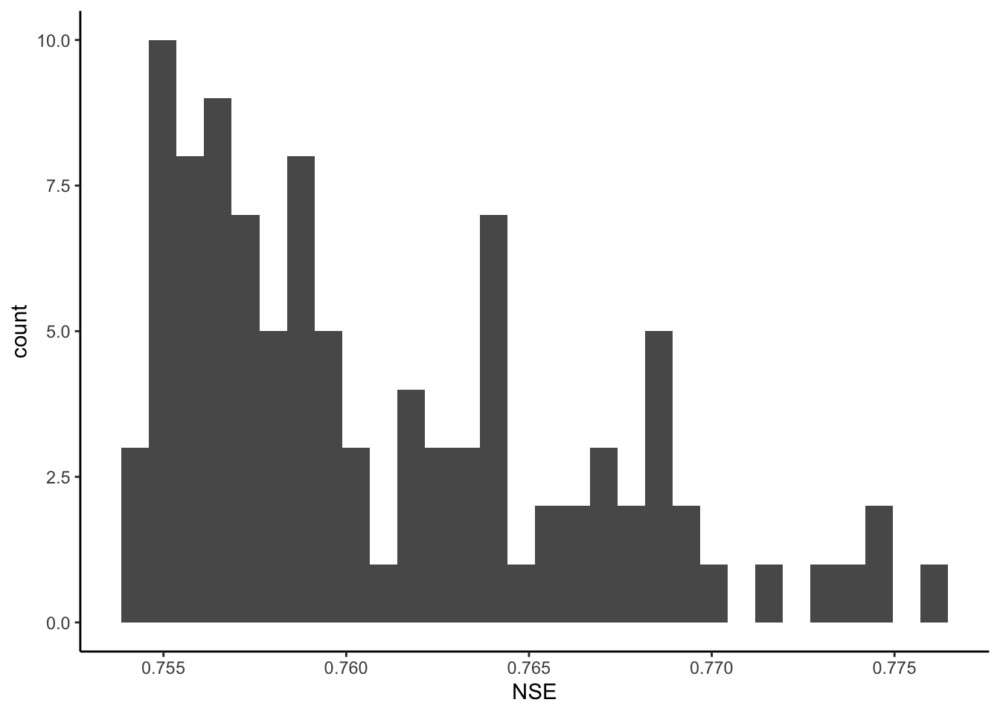

Chapter 18 Intro to Modeling - Calibrate HBV
18.1 Introduction
The following activity is available as a template github repository at the following link:
Goals for this activity:
- Learn how for loops work
- Use for loops to run calibrate the HBV model using the Monte Carlo technique
- Assess the results of the calibration, discuss equifinality
We saw in the last activity that coming up with the parameters that create a model that fits our watershed discharge best is hard. For this reason, there are several ways people have devised for automating this process. We are going to explore one: a Monte Carlo calibration.
To use this approach, we will create a ton of random parameter sets, run the model for each, and then see which one fits best. The idea is that by creating a bunch of random sets of parameters, we will end up with at least one that works well. As you might guess, this can take a while. We will just do this for 100 or 1000 runs here in this activity, but we will also explore some output from a 100,000 run Monte Carlo that I ran and saved.
There is one new package this time, just for creating a parallel coordinate plot to look at the results of the 100k run Monte Carlo at the end.
library(tidyverse)
library(lubridate)
library(patchwork)
library(plotly)
library(GGally) #for making parallel coordinate plot
theme_set(theme_classic())In order to do what we are going to do, we need for loops
val <- 0
for(x in 1:10){
val[x] <- x
}
val## [1] 1 2 3 4 5 6 7 8 9 10days <- c("mon","tues","wednes")
for(x in 1:length(days)){
days[x] <- paste0(days[x], "day")
}
days## [1] "monday" "tuesday" "wednesday"gages <- c("123","ABC","001")
for(g in gages){
print(g)
}## [1] "123"
## [1] "ABC"
## [1] "001"18.2 Prep data
Import data Make P, Qobs, Temp as vectors
#Precip
P1 <- read_csv("HBV/Pwd2009-2012.csv") %>%
select(DATE, WS_3) %>%
mutate(DATE = ymd(DATE)) %>%
filter(DATE >= start & DATE <= end)##
## ── Column specification ────────────────────────────────────────────────────────
## cols(
## DATE = col_character(),
## WS_1 = col_double(),
## WS_2 = col_double(),
## WS_3 = col_double(),
## WS_4 = col_double(),
## WS_5 = col_double(),
## WS_6 = col_double(),
## WS_7 = col_double(),
## WS_8 = col_double(),
## WS_9 = col_double()
## )P <- P1$WS_3
#Streamflow mm/d
Qobs1 <- read_csv("HBV/SWD2009-2012.csv") %>%
select(DATE, WS_3) %>%
mutate(DATE = ymd(DATE)) %>%
filter(DATE >= start & DATE <= end)##
## ── Column specification ────────────────────────────────────────────────────────
## cols(
## DATE = col_character(),
## WS_1 = col_double(),
## WS_2 = col_double(),
## WS_3 = col_double(),
## WS_4 = col_double(),
## WS_5 = col_double(),
## WS_6 = col_double(),
## WS_7 = col_double(),
## WS_8 = col_double(),
## WS_9 = col_double()
## )Qobs <- Qobs1$WS_3
#Temp in deg C
Temp1 <- read_csv("HBV/Tdm2009-2012.csv")%>%
select(DATE, STA_1) %>%
mutate(DATE = ymd(DATE)) %>%
filter(DATE >= start & DATE <= end)##
## ── Column specification ────────────────────────────────────────────────────────
## cols(
## DATE = col_character(),
## STA_1 = col_double(),
## STA_6 = col_double(),
## STA_14 = col_double(),
## STA_INT = col_double(),
## STA_HQ = col_double(),
## STA_23 = col_double(),
## STA_17 = col_double(),
## STA_24 = col_double()
## )Temp <- Temp1$STA_1
#Snow in SWE, mm
snow <- read_csv("HBV/sno2009-2012.csv") %>%
select(DATE, STA2) %>%
mutate(DATE = ymd(DATE)) %>%
filter(DATE >= start & DATE <= end)##
## ── Column specification ────────────────────────────────────────────────────────
## cols(
## .default = col_double(),
## DATE = col_character()
## )
## ℹ Use `spec()` for the full column specifications.## Warning: 76 parsing failures.
## row col expected actual file
## 1 -- 22 columns 25 columns 'HBV/sno2009-2012.csv'
## 2 -- 22 columns 25 columns 'HBV/sno2009-2012.csv'
## 3 -- 22 columns 25 columns 'HBV/sno2009-2012.csv'
## 4 -- 22 columns 25 columns 'HBV/sno2009-2012.csv'
## 5 -- 22 columns 25 columns 'HBV/sno2009-2012.csv'
## ... ... .......... .......... ......................
## See problems(...) for more details.## Warning: 8 failed to parse.18.3 Calculate PET
lat <- 43 + 57/60 #43 degrees and 57 minutes
latrad <- (lat/360) * 2 * pi #convert to radians
PET1 <- select(Temp1, DATE) %>%
mutate(DOY = yday(DATE)) %>% #DOY for dates
mutate(tempvar = (2 * pi / 365) * DOY) %>%
#declination of the sun above the celestial equator in
#radians on day JulDay of the year
mutate(delta_h = 0.4093 * sin(tempvar - 1.405)) %>%
#day length in h
mutate(daylen = (2 * acos(-tan(delta_h) * tan(latrad)) / 0.2618)) %>%
mutate(
PET = 29.8 * daylen * 0.611 * exp(17.3 * Temp /
(Temp + 237.3)) / (Temp + 273.2)) #PET Hamon method
PET <- PET1$PET18.4 HBV Parameters
The table below shows the parameters of the HBV model, the minimum and maximum for those values, and a description of their function in the model.
| Object Name | Min | Max | Description |
|---|---|---|---|
| FC | 40 | 400 | Max soil moisture storage, field capacity |
| beta | 1 | 6 | Shape coefficient governing fate of water input to soil moisture storage |
| LP | .3 | 1 | Threshold for reduction of evaporation |
| SFCF | 0.4 | 1.2 | Snowfall correction factor |
| TT | -1.5 | 1.2 | Threshold temperature |
| CFMAX | 1 | 8 | Degree-day factor |
| k0 | 0.05 | 0.5 | Recession constant (upper storage, near surface) |
| k1 | 0.01 | 0.3 | Recession constant (upper storage) |
| k2 | 0.001 | 0.15 | Recession constant (lower storage) |
| UZL | 0 | 70 | Threshold for shallow storage |
| PERC | 0 | 4 | Percolation, max flow from upper to lower storage |
| MAXBAS | 1 | 3 | base of the triangular routing function, days" |
To pass a set of parameters to the model, we just put them into a single vector in the order they are in the table above. In the chunk below, I’ve structured this to make it easy to see a description of each parameter, but you could also just do it in one line without all the comments. Just be sure to get the order right!
The code below sets the routing to 0, which is what we want for a small catchment.
#number of runs
N <- 100
# PARAMETERS RANGE and generate set
FC <- runif(N, min = 40 , max = 400) #Max soil moisture storage, field capacity
beta <- runif(N, min = 1 , max = 6) #Shape coefficient governing fate of water input to soil moisture storage
LP <- runif(N, min = 0.3 , max = 1) #Threshold for reduction of evap
SFCF <- runif(N, min = 0.4 , max = 1.2) #Snowfall correction factor
TT <- runif(N, min = -1.5 , max = 1.2) #Threshold temperature
CFMAX <- runif(N, min = 1 , max = 8) #Degree-day factor
k0 <- runif(N, min = 0.05 , max = 0.5) #Recession constant (upper storage, near surface)
k1 <- runif(N, min = 0.01 , max = 0.3) #Recession constant (upper storage)
k2 <- runif(N, min = 0.001, max = 0.15) #Recession constant (lower storage)
UZL <- runif(N, min = 0 , max = 70) #Threshold for shallow storage
PERC <- runif(N, min = 0 , max = 4) #Percolation, max flow from upper to lower storage
MAXBAS<- rep(1, N) #base of the triangular routing function, days
NSE <- rep(NA, N) #create NSE column, to be filled in for loop
pars <- cbind(FC, beta, LP, SFCF,
TT, CFMAX, k0, k1,
k2, UZL, PERC, MAXBAS, NSE) #trim the first 40% (warm up) of Qobs off for NSE calculation
EvalStart <- floor(length(Qobs)*0.4)
EvalEnd <- length(Qobs)
for (i in 1:N){
#call model with i parameter set generated above
results <- HBV(pars[i,1:12], P, Temp, PET, routing)
#add the Qobs to results
results <- cbind(results, Qobs)
#trim the first 40% of the record so it isn't included in the NSE calculation
results <- results[EvalStart:EvalEnd,]
#Calculate NSE and add to parameter set
pars[i,13] <- 1 - ((sum((results$Qobs - results$q) ^ 2)) / sum((results$Qobs - mean(results$Qobs)) ^ 2))
}#find best parameters
pars <- as_tibble(pars)
bestparams <- pars %>% filter(NSE == max(NSE)) %>%
slice(1) %>%
as.numeric()
#run with best parameters
modeloutput <- HBV(bestparams, P, Temp, PET, routing)
#add observations for plotting
modeloutput <- bind_cols(modeloutput, Qobs1)
#trim out warm up period for plotting
OutputTrim <- filter(modeloutput, DATE >= mdy("08-07-2010"))#Calculate NSE
NSE <- 1 - ((sum((OutputTrim$q - OutputTrim$WS_3) ^ 2)) /
sum((OutputTrim$WS_3 - mean(OutputTrim$WS_3)) ^ 2))
#Create plot with NSE in title
OutputTrim %>% plot_ly(x = ~DATE) %>%
add_trace(y = ~q, name = 'Modeled', type = 'scatter', mode = 'lines') %>%
add_trace(y = ~WS_3, name = 'Measured', type = 'scatter', mode = 'lines') %>%
layout(title=paste("NSE: ", round(NSE,2)))NSE in the top 100 runs from a 100,000 run monte carlo
#the [,-1] drops the first column, which is just row numbers
pars100 <- read_csv("HBV/parsFrom100kRun.csv")[,-1]## Warning: Missing column names filled in: 'X1' [1]##
## ── Column specification ────────────────────────────────────────────────────────
## cols(
## X1 = col_double(),
## FC = col_double(),
## beta = col_double(),
## LP = col_double(),
## SFCF = col_double(),
## TT = col_double(),
## CFMAX = col_double(),
## k0 = col_double(),
## k1 = col_double(),
## k2 = col_double(),
## UZL = col_double(),
## PERC = col_double(),
## MAXBAS = col_double(),
## NSE = col_double(),
## ranks = col_double()
## )ggplot(pars100, aes(NSE))+
geom_histogram()## `stat_bin()` using `bins = 30`. Pick better value with `binwidth`.
Show the top 10 parameter sets
rankedpars <- filter(pars100, ranks <= 10)
mins <- c(40, 1, 0.3 , 0.4, -1.5, 1, 0.05, 0.01, 0.001, 0, 0, 1, 0, 0)
maxs <- c(400, 6, 1, 1.2, 1.2, 8, 0.5, 0.3, 0.15, 70 , 4, 3, 0, 0)
rankedpars <- rbind(rankedpars, mins, maxs)
rankedpars <- rankedpars %>% mutate(NSE = as.character(round(NSE, 2)))
rankedpars$NSE[rankedpars$NSE == "0"] <- "Min/Max"
rankedpars <- rankedpars %>% mutate(ranks = factor(ranks))
rankedpars %>% ggparcoord(columns = 1:11,
groupColumn = 13,
showPoints = TRUE,
scale = "uniminmax") +
theme_minimal() +
ggtitle("Top 10 parameter sets from 100,000 run Monte Carlo")+
ylab("normalized parameter values")+
xlab("parameters")